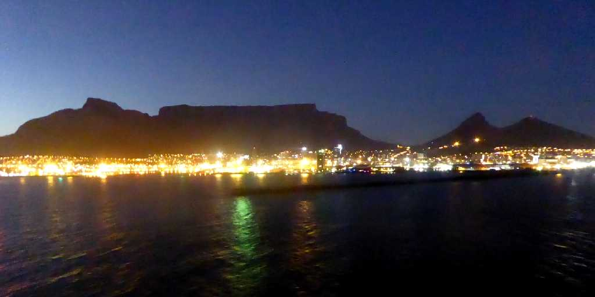
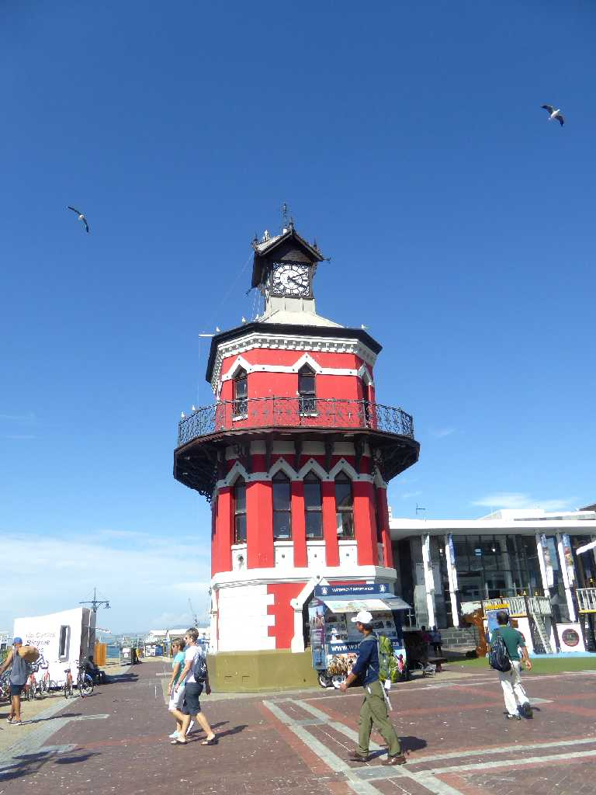
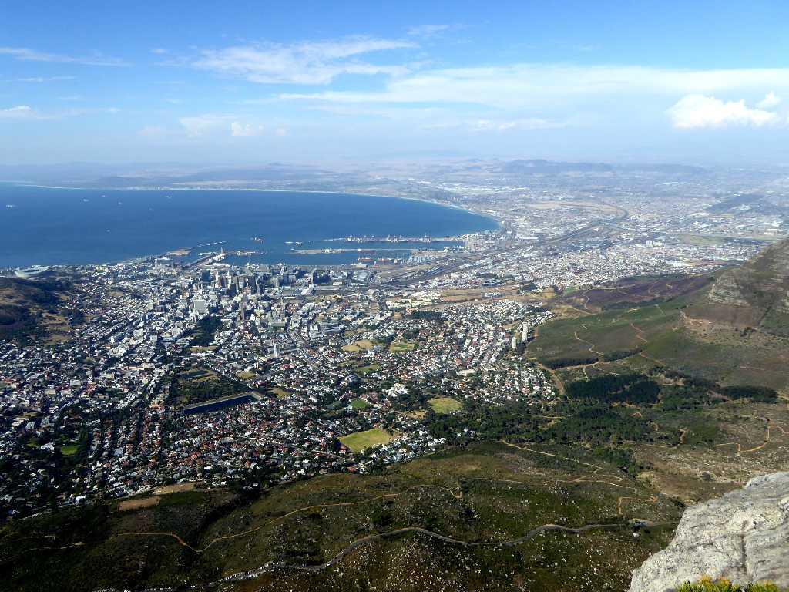
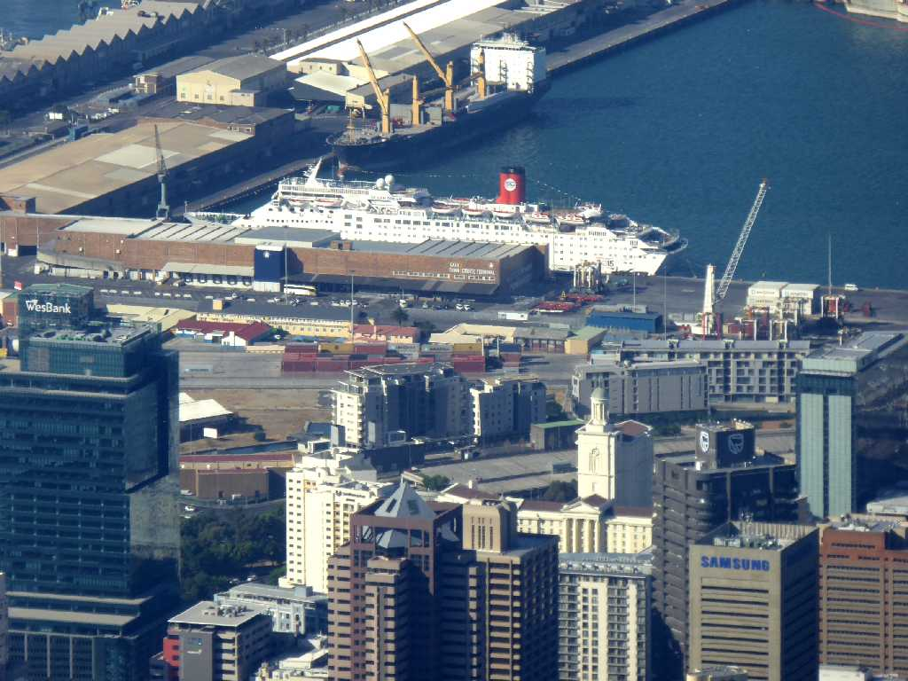
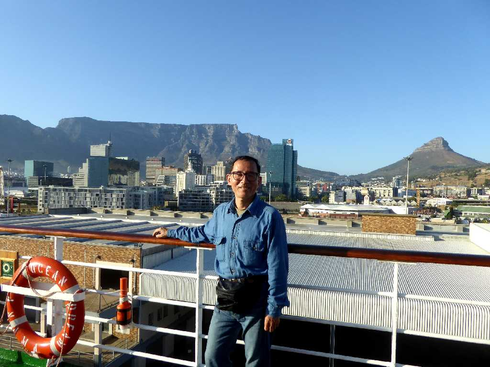
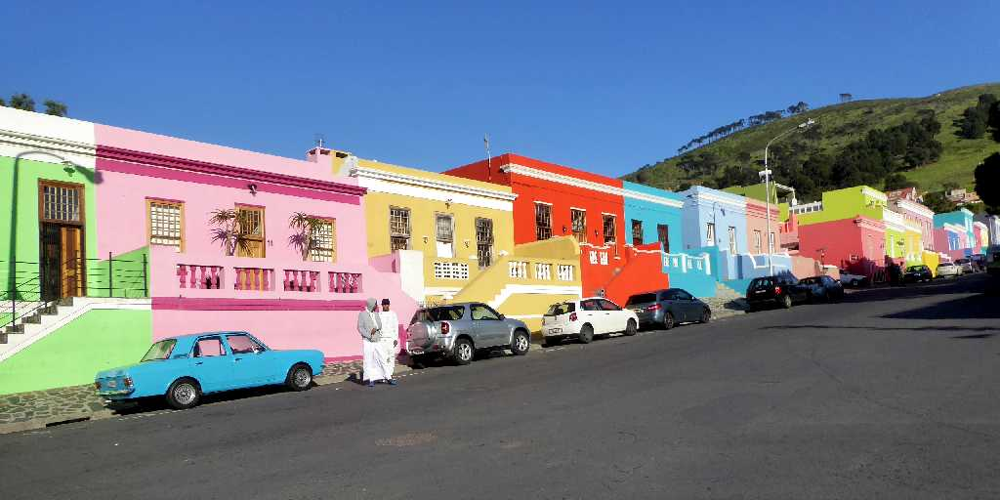
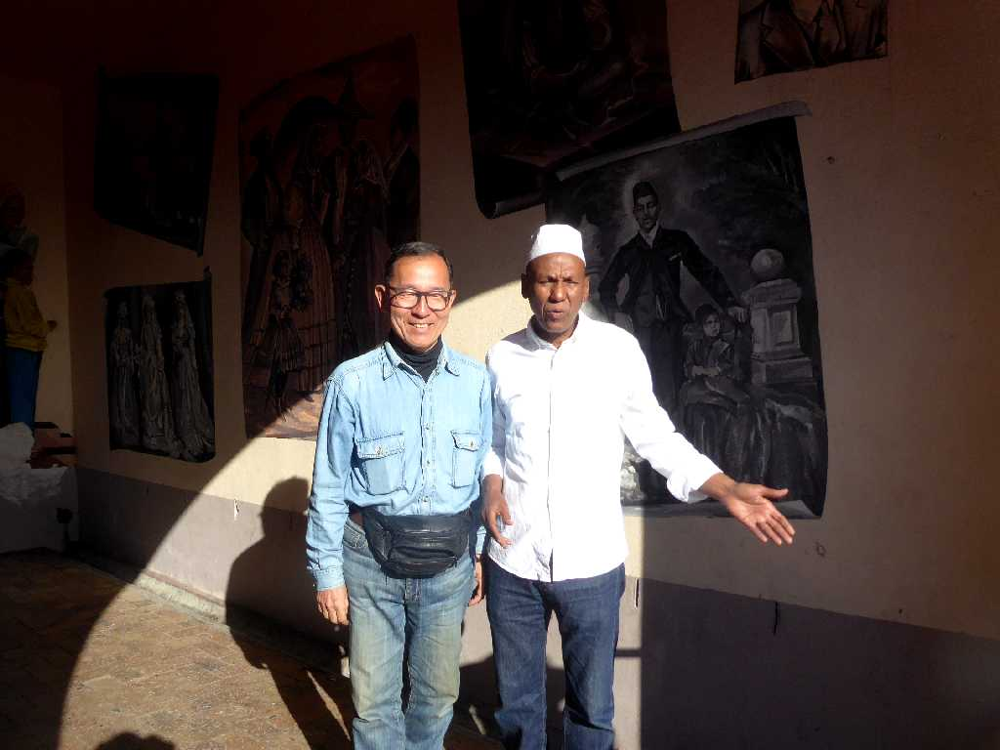
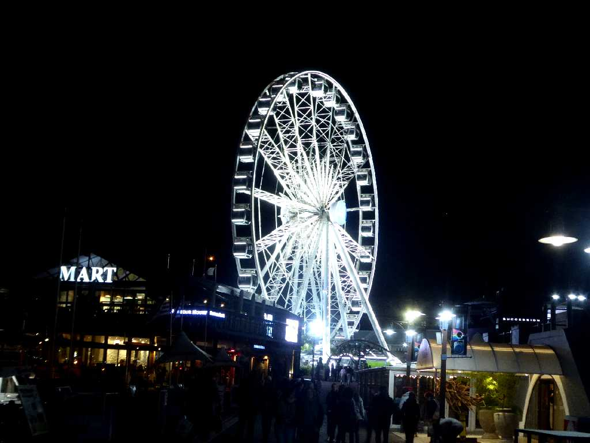

Table Mountain Cape Town

Clock Tower Water Front Cape Town

View Town from Table Mountain Cape Town

View Harbour from Table Mountain Cape Town

January 23 2016 Harbour
地球一周の船旅出港３８日目１８,０５３ｋｍ航行しケープタウン港に着岸

Bo Kaap Cape Town
地球一周の船旅以来２年半ぶりの再訪問で１８世紀頃のマレー系ムスリムの建物が残るボカープ地区を尋ねる

September 16 2018 Bo Kaap Cape Town
September 16 2018 Table Mountain Cape Town
雲一つないテーブルマウンテンに１６時頃から雲がわき始めロープウェイで到着したときは雲の中で視界ゼロ

The Cape Wheel Cape Town